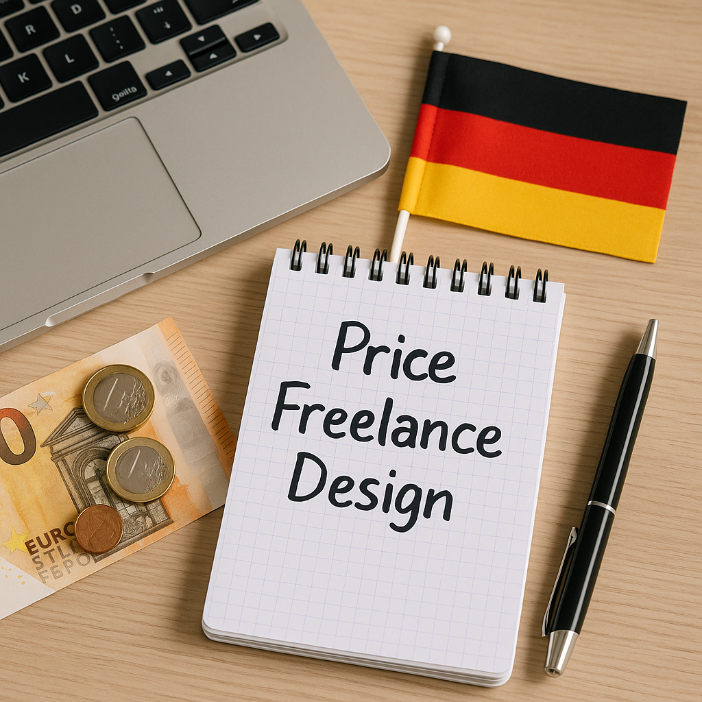
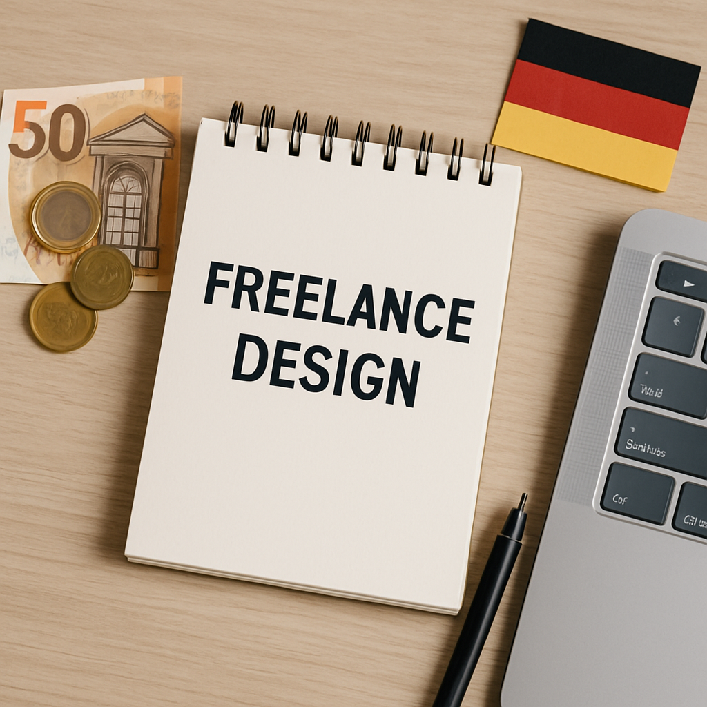

Understanding the Freelance Design Market in Germany

Setting the right price for your freelance design services is crucial for attracting clients and sustaining your business. However, pricing can be challenging, especially in a competitive market like Germany. Below are key strategies to determine your rates effectively.
1. Research the Market Rates

Before setting your price, it’s essential to understand the current market rates. Here’s how to do it:
- Check freelance platforms like Upwork and Fiverr to see average rates for similar services.
- Join local design groups or forums to discuss pricing with other freelancers.
- Review job postings to see what clients are willing to pay for various services.
2. Calculate Your Costs
Knowing your expenses will help you price your services accurately. Consider the following:
- Hourly Rate: Calculate your desired annual income and divide it by billable hours.
- Overhead Costs: Factor in tools, software subscriptions, and office-related expenses.
- Taxes: Remember to set aside money for taxes, especially since freelancers must manage their own tax submissions.
3. Choose a Pricing Model
There are several pricing models you can adopt, including:
- Hourly Rates: Best for projects where the scope is uncertain.
- Flat Fee: Ideal for well-defined projects to give clients a clear cost upfront.
- Retainer Fees: Useful for long-term clients who require consistent work.
4. Add Value to Your Services
To justify your rates, consider adding value through:
- Exceptional Customer Service: Be responsive and communicative.
- Portfolio Samples: Showcase your best work to establish credibility.
- Unique Specializations: Offer niche services that set you apart from the competition.
5. Test and Adjust Your Rates
Don’t be afraid to test your pricing. Start with your calculated rates and:
- Adjust based on client feedback.
- Monitor conversion rates to see if clients are booking.
- Reassess every few months to make necessary changes.
Conclusion
Pricing your freelance design services in Germany requires research, calculation, and flexibility. By understanding the market, calculating your costs, and choosing the right pricing model, you can effectively find a balance that works for you and your clients.